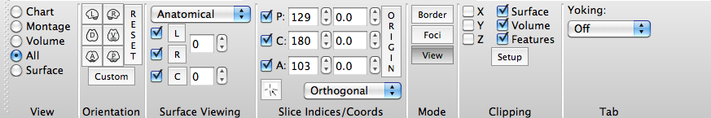

All View
All View displays the left and right hemisphere surfaces (and
cerebellum if loaded) and all 3 volume planes in one Viewing
Tab. In All View, the Toolbar looks like this:

- Orientation contains buttons to
set orthogonal and User-defined views of the brain
surfaces/volume displayed.
- Orthogonal view buttons are labeled:
L (left), R (right), D (dorsal), V
(ventral), A (anterior), and P
(posterior).
- The Reset button resets the
orientation/zoom to the default.
- Custom
Orientation allows one to set and save
(or not) a specific transform (pan, rotate, oblique
rotate, zoom) for a surface or volume.
- Surface Viewing contains
pull-downs and check-boxes to set the surfaces to view: L
(left hemisphere), R (right hemisphere), C
(cerebellum).
- The top pull-down menu changes the
type of surface: Anatomical, Inflated or Very Inflated.
- The check-boxes to the left of the L,
R and C turn on/off the display of that structure.
- To change the structure's surface
file, click on the L, R or C button and a list of loaded
files will appear for selection.
- The scroll boxes
to the right, control the spacing between left and right
hemispheres (relative to anatomical spacing = 0) and the
spacing of the cerebellum away from the cortex.
- Slice Indices/Coords
contains toggles to turn off/on volume planes (P =
parasagittal, C = coronal, A = axial) and
settings for the slice index and stereotaxic (Talairach)
coordinate to be viewed.
- The vertical Origin button
rests the slice indices to the default (centered at the
AC).
- The
 button (default
on) activates movement of the crosshairs/volume slice to the
same plane as the brainordinate selected in any of the
Viewing Tabs in the same yoking group as the All tab.
button (default
on) activates movement of the crosshairs/volume slice to the
same plane as the brainordinate selected in any of the
Viewing Tabs in the same yoking group as the All tab.
- The pull-down at the bottom toggles
between Orthogonal and Oblique
volume viewing.
- Clipping
contains settings for cutting down Surface, Volume, or
Features data to be viewed.
- Tab
contains cross-tab functions for yoking the display of
two or more Viewing Tabs.